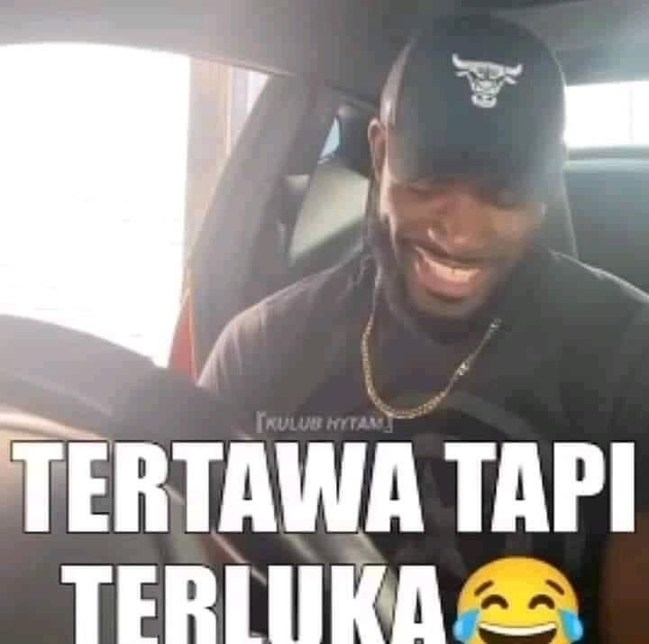

Blog ini menceritakan bagaimana pengalaman penulis ketika pertamakali mendapatkan peringkat pertama dalam kompetisi CTF pesawaran 2025.
1. Technical Meeting
Pada awal bulan juli, Saya dan tim telah berhasil mendaftarkan diri ke Pelombaan CTF Pesawaran 2025. 1 Minggu kemudian, kami mendapatkan url untuk technical Meeting. Informasi yang diberikan oleh panitia kepada peserta cukup jelas. Berikut adalah peraturan dan kategori soal yang akan dilombakan:
# Peratuan kompetisi 1. Peserta dilarang menggunakan tools AI manapun untuk membantu solve soal. 2. Dilarang untuk sharing flag kepada tim lain. 3. Diperbolehkan menggunakan sistem operasi manapun. 4. Wajib menggunakan koneksi internet dari ruangan kompetisi untuk mencegah kecurangan. 5. Dilarang menyerang web perlombaan # Kategori Soal 1. Kriptografi 2. Web Exploitation
2. 🧑💻Latihan Selama 2 Minggu Penuh
Kami melakukan latihan intesn selama 2 minggu dengan pertemuan 5 kali dalam seminggu. Kami latihan menggunakan website CTF milik kampus kami ctf.teknokrat.ac.id. Kami didampingi oleh Dosen yang memiliki keahlian di bidang cyber security. Beliau mewadahi kami dan membuatkan soal yang linear dengan ketentuan lomba yang akan kami laksanakan di tanggal 30 Juli 2025.
3. 😠Diskusi H-1
Perlombaan telah sampai di H-1. Disini kami tidak latihan karena untuk menjaga mental supaya tidak goyah ketika mengerjakan soal besok. Persiapan yang akan kami bawa tidaklah banyak. Cukup laptop dan charger saja😹. Selain itu, kami tidur awal karena memang perjalanan untuk ke lokasi memakan waktu sekitar 1 jam dari lokasi camp kami.
4. 🏁Kompetisi Di Hari-H
Sampai di hari-H. Setelah melakukan perjalanan kurang lebih 1 jam dari camp. Kami telah tiba di lokasi perlombaan. Awalnya kami mengira lokasi sudah dipenuhi oleh lautan peserta, ternyata baru kelompok kami yang sampai😹. Tapi tidak masalah, disini kami mengatur strategi terlebih dahulu sebelum perlombaan dimulai. Kami juga menyempatkan untuk berswafoto supaya ada kenang-kenangan yang bisa dibawa dari kompetisi ini :D

Btw, ini teman 1 tim saya :D Orangnya jago gays. Dia menjadi salah satu panutan kedua saya di dunia CTF.
Ini foto ketika perlombaan sudah dimulai. Jujur, rasanya tegang karena memang pertama kali bagi saya mengikutin kompetisi offline. Oiya... Fyi, kami berdua membagi kategori soal, si Atmin mengerjakan kriptografi dan saya web exploit. Wkwkwkwk... jujur saja, saya kurang pandai mengerjakan soal kriptografi, meski begitu saya tetap belajar kok :D Kami mendapatkan total 12 soal (6 Kripto dan 6 web). Awalnya saya pikir soal kali ini akan lebih sulit dibanding yang sudah pernah saya kerjakan. Ternyata memang sulit😭. Tapi dengan berbekalkan hasil latihan selama 6 minggu. Kami berhasil menyelesaikan semua soal (soal ke 12 solve di menit terakhir :3). Disini mukanya kayak bilang, "Izin serius :D".


5. 🏆Pengunguman Kemenangan
Telah sampai di fase pengunguman setelah jam istirahat makan siang. Karena saya dan atmin berhasil menyelesaikan semua soalnya tanpa menggunakan hint, kami mendapatkan skor maksimal yang menjadikan kami sebagai Peringkat 1 di kompetisi ini (horeee...). Menjadi sebuah kebanggan bagi saya yang seumur hidup belum pernah mendapat peringkat ketika berkompetisi di manapun dan kali ini berhasil mendapatkan Juara 1. Ini juga kali pertama saya masuk ke media berita wkwkwk... Lihat disini

6. 😭Cerita Lucu Tapi Ngenes😭
Hal yang bikin ngenes ketika baru mengetahui beberapa hal. Awalnya saya berniat untuk menabung sertifikat untuk mengajukan beasiswa di kampus saya. Saat sertifikatnya terbit, saya masih di fase libur semester 2 ke semester 3. Saat itu dibuka pengajuan beasiswa tapi saya merasa masih belum pantas dan ada jam yang bertabrakan dengan kelas semester pendek. Maka dari itu saya berniat menedaftar di semester selanjutnya saja.
Disitulah saya baru mencoba cari tahu tentang bagaimana administrasi untuk beasiswa. Saya kaget, karena kating saya bilang bahwa setiap sertifikat yang kita dapatkan di semester kemarin tidak akan berlaku untuk pendaftaran beasiswa di semester depannya lagi😭. Disitu saya merasakan stiker tertawa tapi terluka😹
Tapi gapapa deh, untuk lomba selanjutnya, saya akan coba lagi dan langsung mengajukan beasiswa. Lumayan kan, saya bisa membantu orang tua untuk membayar UKT walaupun hanya 1 semester.
🔖 Kategori: Journey / CTF • 🕓 Est. baca: 4 menit
Catatan: Hacker pertama bukanlah peretas sistem, tapi mahasiswa gabut yang suka oprek komputer.